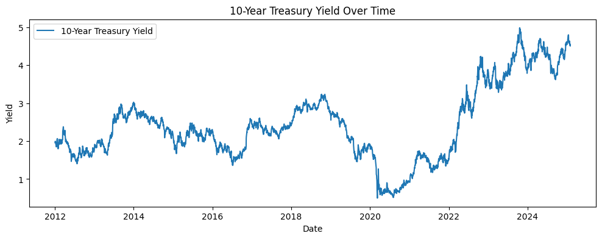
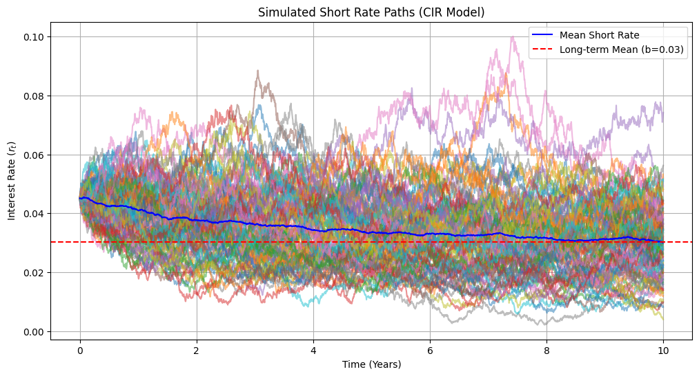
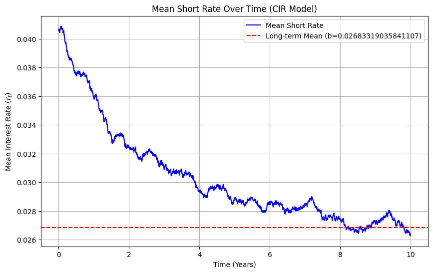
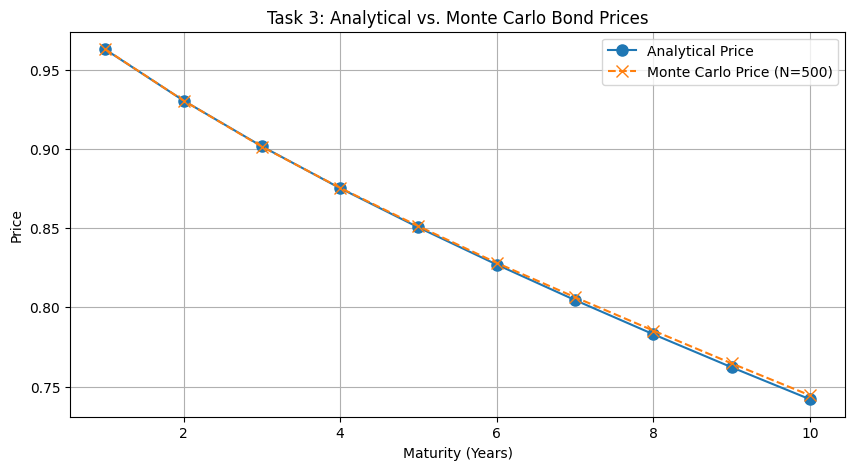
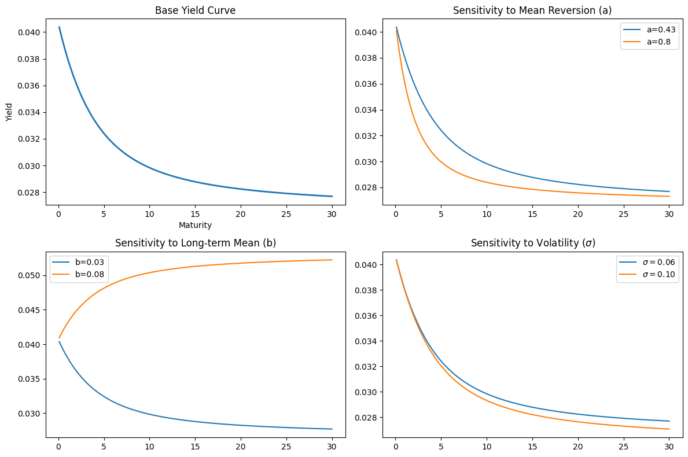

Code
import numpy as np
from sklearn.linear_model import LinearRegression
import matplotlib.pyplot as plt
import seaborn as sns
import pandas as pd
import yfinance as yf\[dr_t = a(b-r_t)dt + \sigma \sqrt{r_t}dW_t\] Where:
The CIR model has a known closed-form solution for the transition density of \(r_t\). The distribution of \(r_t\) given \(r_0\) is a non-central chi-squared distribution. Specifically, if \(r_0\) is the initial interest rate, then: \[r_t \sim \frac{\sigma^2(1 - e^{-at})}{4a} \chi^2_{d}(\lambda)\]
Where: - $d = $ is the degrees of freedom - \(\lambda = \frac{4a e^{-at} r_0}{\sigma^2(1 - e^{-at})}\) is the non-centrality parameter
Parameters \(a\), \(b\), and \(\sigma\) can be estimated using historical interest rate data through methods such as Maximum Likelihood Estimation (MLE) or the Generalized Method of Moments (GMM).
To simulate paths of the CIR model, one can use the Euler-Maruyama method or more advanced techniques like the Milstein scheme. A simple Euler discretization is given by: \[r_{t+\Delta t} = r_t + a(b - r_t)\Delta t + \sigma \sqrt{r_t} \sqrt{\Delta t} Z\] Where \(Z\) is a standard normal random variable.
symbol = "^TNX"
start_date = "2012-01-01"
end_date = "2025-01-31"
data = yf.download(symbol, start=start_date, end=end_date)
data = data['Close'].dropna()
rate = data.values
plt.figure(figsize=(12,4))
plt.plot(data, label='10-Year Treasury Yield')
plt.title('10-Year Treasury Yield Over Time')
plt.xlabel('Date')
plt.ylabel('Yield')
plt.legend()
plt.show()YF.download() has changed argument auto_adjust default to True
\[ r_{t+\Delta t} - r_t = a(b - r_t)\Delta t + \sigma \sqrt{r_t} \sqrt{\Delta t} \mathcal{N}(0,\Delta t) \]
\[\dfrac{r_{t+\Delta t} - r_t}{\sqrt{r_t}} = \dfrac{ab \Delta t}{\sqrt{r_t}}-a\sqrt{r_t} \Delta t + \sigma \sqrt{\Delta t} \mathcal{N}(0,1)\]
This can be write the linear regression: \[y_i = \beta_1 z_{1,i} + \beta_2 z_{2,i}+ \epsilon_i\] Where : \[\begin{aligned} & y_i = \dfrac{r_{t+\Delta t} - r_t}{\sqrt{r_t}} \\ & \beta_1 = ab \\ & \beta_2 = -a \\ & z_{1,i} = \dfrac{\Delta t}{\sqrt{r_t}} \\ & z_{2,i} = \sqrt{r_t}\Delta t \\ & \epsilon_i = \sigma \sqrt{\Delta t} \mathcal{N}(0,1) \end{aligned}\]
def ols_cir(rates, dt):
"""
OLS calibration of CIR model:
dr_t = a(b - r_t)dt + sigma sqrt(r_t) dW_t
"""
rates = np.asarray(rates)
# Keep only strictly positive rates
mask = rates[:-1] > 0
rs = rates[:-1][mask]
rt = rates[1:][mask]
# Dependent variable
y = (rt - rs) / np.sqrt(rs)
# Regressors
z1 = dt / np.sqrt(rs)
z2 = dt * np.sqrt(rs)
X = np.column_stack((z1, z2))
# OLS regression without intercept
model = LinearRegression(fit_intercept=False)
model.fit(X, y)
beta1, beta2 = model.coef_
# Recover CIR parameters
a_hat = -beta2
b_hat = beta1 / a_hat
# Residuals and sigma
residuals = y - model.predict(X)
sigma_hat = np.std(residuals, ddof=1) / np.sqrt(dt)
return a_hat, b_hat, sigma_hatResult of Estimation :
Mean reversion: a = 0.32924807482277707
Long-term mean: b = 0.0302445410181786
Volatility : sigma = 0.05686958532836494Discretize the SDE using the Euler-Maruyama method.
For the CIR model, the discretized form is: \[ r_{t+\Delta t} = r_t + a(b - r_t)\Delta t + \sigma \sqrt{r_t} \sqrt{\Delta t} Z \] Where \(Z \sim N(0,1)\) is a standard normal random variable.
def simulate_cir_paths(r0, a, b, sigma, T, dt, n_paths):
n_steps = int(T / dt)
rates = np.zeros((n_steps + 1, n_paths))
rates[0] = r0
for t in range(1, n_steps + 1):
# Standard Normal Random Variables
dz = np.random.normal(0, np.sqrt(dt), n_paths)
# CIR SDE: dr = a(b - r)dt + sigma * sqrt(r) * dW
# We use np.maximum to ensure r doesn't go negative in the sqrt
previous_r = rates[t-1]
drift = a * (b - previous_r) * dt
diffusion = sigma * np.sqrt(np.maximum(previous_r, 0)) * dz
rates[t] = previous_r + drift + diffusion
return ratesCalculate the bond price at maturity \(T\) using the simulated interest rate paths.
The price of a zero-coupon bond at time \(t\) maturing at time \(T\) is given by: \[ P(t,T) = E_t\left[e^{-\int_t^T r_s ds}\right] \]
Using Monte Carlo simulation, we can approximate this expectation by averaging over multiple simulated paths of the interest rate.
Estimate the bond price using Monte Carlo simulation.
Calculate the Bond Price
For each simulated path \(i\), calculate the “Stochastic Discount Factor” (SDF): \[ D_i = \exp \left(-\sum_{j=1}^{M} r_j \Delta t \right) \]
The Monte Carlo price is the average of these factors across all \(N\) paths:
\[ P_{MC}(0,T) \approx \frac{1}{N} \sum_{i=1}^{N} D_i \]
# Parameters
# a = 0.2
# b = 0.05
# sigma = 0.03
r0 = rates[-1][0]
T_max = 10
dt = 1/252
n_steps = int(T_max / dt)
time_grid = np.linspace(0, T_max, n_steps + 1)
n_paths = 100
paths = simulate_cir_paths(r0, a, b, sigma, T_max, dt, n_paths)
mc_price = price_bond_mc(paths, dt)
print(f"Monte Carlo Bond Price (10Y): {mc_price:.4f}")Monte Carlo Bond Price (10Y): 0.7090np.random.seed(42)
paths = simulate_cir_paths(r0, a, b, sigma, T_max, dt, n_paths)
mean_rates = np.mean(paths, axis=1)
plt.figure(figsize=(12, 6))
plt.plot(time_grid, paths ,alpha=0.5)
plt.plot(time_grid, mean_rates, label='Mean Short Rate', color='blue')
plt.axhline(y=b, color='r', linestyle='--', label=f'Long-term Mean (b={b:.2f})')
plt.title("Simulated Short Rate Paths (CIR Model)")
plt.xlabel("Time (Years)")
plt.ylabel("Interest Rate ($r_t$)")
plt.legend()
plt.grid(True)
plt.show()
## Calculate the mean of interest rates at each time step
mean_rates = np.mean(paths, axis=1)
plt.figure(figsize=(10, 6))
plt.plot(time_grid, mean_rates, label='Mean Short Rate', color='blue')
plt.axhline(y=b, color='r', linestyle='--', label=f'Long-term Mean (b={b})')
plt.title("Mean Short Rate Over Time (CIR Model)")
plt.xlabel("Time (Years)")
plt.ylabel("Mean Interest Rate ($r_t$)")
plt.legend()
plt.grid(True)
plt.show()
def cir_analytical_price(r0, a, b, sigma, T):
if T == 0: return 1.0
gamma = np.sqrt(a**2 + 2 * sigma**2)
exp_g = np.exp(gamma * T)
# calculate B(T)
den_b = (gamma + a) * (exp_g - 1) + 2 * gamma
B = 2 * (exp_g - 1) / den_b
# calculate A(T)
num_a = 2 * gamma * np.exp((a + gamma) * T / 2)
A = (num_a / den_b)**(2 * a * b / sigma**2)
return A * np.exp(-B * r0)Monte Carlo Price: 0.7459
Analytical Price: 0.7421
Absolute Error: 0.0038Comparison of Monte Carlo and Analytical Prices
# Task 3: Compare Analytical vs Simulated Prices
r0 = rates[-1][0]
T_max = 10
dt = 1/252
n_steps = int(T_max / dt)
time_grid = np.linspace(0, T_max, n_steps + 1)
n_paths = 100
maturities = np.arange(1, 11)
analytical_prices = [cir_analytical_price(r0, a, b, sigma, T) for T in maturities]
# Monte Carlo with N=500
n_paths_mc = 500
full_paths = simulate_cir_paths(r0, a, b, sigma, 10, dt, n_paths_mc)
mc_prices = []
for T in maturities:
steps_T = int(T / dt)
integral_r = np.sum(full_paths[:steps_T, :], axis=0) * dt
mc_prices.append(np.mean(np.exp(-integral_r)))
plt.figure(figsize=(10, 5))
plt.plot(maturities, analytical_prices, 'o-', label='Analytical Price', markersize=8)
plt.plot(maturities, mc_prices, 'x--', label=f'Monte Carlo Price (N={n_paths_mc})', markersize=8)
plt.title("Task 3: Analytical vs. Monte Carlo Bond Prices")
plt.xlabel("Maturity (Years)")
plt.ylabel("Price")
plt.legend()
plt.grid(True)
plt.show()
This plot compares the Zero-Coupon Bond prices calculated using the exact mathematical formula (Analytical) against the average of \(500\) simulated paths (Monte Carlo).
Observations: The Monte Carlo prices (marked with ‘x’) align almost perfectly with the analytical prices (the solid line). This confirms that your simulation logic is correct.
Trend: As maturity increases, the bond price decreases. This is intuitive, as a dollar received 10 years from now is worth less today than a dollar received 1 year from now.
# Camparision dataframe
import pandas as pd
absolute_errors = [abs(ap - mp) for ap, mp in zip(analytical_prices, mc_prices)]
comparison_df = pd.DataFrame({
'Maturity (Years)': maturities,
'Analytical Price': analytical_prices,
f'Monte Carlo Price (N={n_paths_mc})': mc_prices,
'Absolute Error': absolute_errors
})
comparison_df| Maturity (Years) | Analytical Price | Monte Carlo Price (N=500) | Absolute Error | |
|---|---|---|---|---|
| 0 | 1 | 0.962651 | 0.962791 | 0.000140 |
| 1 | 2 | 0.930391 | 0.930399 | 0.000009 |
| 2 | 3 | 0.901567 | 0.901350 | 0.000218 |
| 3 | 4 | 0.875132 | 0.875351 | 0.000219 |
| 4 | 5 | 0.850418 | 0.851182 | 0.000764 |
| 5 | 6 | 0.827000 | 0.828049 | 0.001049 |
| 6 | 7 | 0.804604 | 0.806411 | 0.001806 |
| 7 | 8 | 0.783053 | 0.785369 | 0.002316 |
| 8 | 9 | 0.762229 | 0.764684 | 0.002456 |
| 9 | 10 | 0.742053 | 0.744529 | 0.002476 |
# Task 4: Yield Curve and Sensitivity
m_yields = np.linspace(0.1, 30, 100)
def get_yields(a, b, sigma):
prices = [cir_analytical_price(r0, a, b, sigma, T) for T in m_yields]
return -np.log(prices) / m_yields
plt.figure(figsize=(12, 8))
plt.subplot(2, 2, 1)
plt.plot(m_yields, get_yields(a, b, sigma), label='Base Case', lw=2)
plt.title("Base Yield Curve")
plt.xlabel("Maturity")
plt.ylabel("Yield")
plt.subplot(2, 2, 2)
plt.plot(m_yields, get_yields(a, b, sigma), label=f'a={a:.2f}')
plt.plot(m_yields, get_yields(2*a, b, sigma), label='a=0.8')
plt.title("Sensitivity to Mean Reversion (a)")
plt.legend()
plt.subplot(2, 2, 3)
plt.plot(m_yields, get_yields(a, b, sigma), label=f'b={b:.2f}')
plt.plot(m_yields, get_yields(a, 2*b, sigma), label='b=0.08')
plt.title("Sensitivity to Long-term Mean (b)")
plt.legend()
plt.subplot(2, 2, 4)
plt.plot(m_yields, get_yields(a, b, sigma), label=f'$\sigma={sigma:.2f}$')
plt.plot(m_yields, get_yields(a, b, 2*sigma), label='$\sigma=0.10$')
plt.title("Sensitivity to Volatility ($\sigma$)")
plt.legend()
plt.tight_layout()
plt.show()
This dashboard shows how the term structure of interest rates changes when you manipulate the model’s “knobs” (\(a, b, \sigma\)).
Base Case: A typical upward-sloping yield curve starting at \(r_0 = 0.03\) and converging toward the mean.
Sensitivity to \(a\) (Speed): A higher \(a\) (0.8 vs 0.2) causes the curve to reach the long-term mean much faster, resulting in a steeper initial slope.
Sensitivity to \(b\) (Mean): Increasing \(b\) shifts the entire “long end” of the curve upward, as the market expects rates to be higher in the distant future.
Sensitivity to \(\sigma\) (Volatility): Higher volatility actually creates a downward pressure on the yield curve for long maturities. This is due to “convexity bias” as uncertainty increases, the value of the bond’s floor (it can’t go below zero) becomes more valuable, raising the bond price and thus lowering the yield.